between counter-propagating beams in a coil.
between counter-propagating beams in a coil.
Fibre Bragg grating
UV interference writes a periodic index change  with period
with period  into a germanium-doped core (Hill et al. 1978; Meltz et al. 1989). Each period reflects weakly; at
into a germanium-doped core (Hill et al. 1978; Meltz et al. 1989). Each period reflects weakly; at  (first order) all reflections are in phase — the fibre version of a dielectric mirror (coupled-mode theory). Peak reflectance
(first order) all reflections are in phase — the fibre version of a dielectric mirror (coupled-mode theory). Peak reflectance
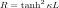
; bandwidth between the first zeros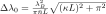
: weak gratings (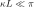
) are narrow,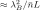
; strong ones saturate at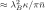
.Picture: grating, reflected and transmitted spectra
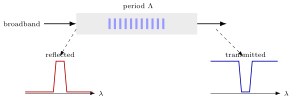
Sensing with FBGs
Strain stretches and lowers
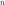
through the photoelastic effect: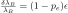
,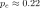
in silica. Temperature acts through thermal expansion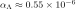
/K and the thermo-optic coefficient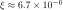
/K. Many gratings at different on one fibre are read by one broadband source and a spectrometer (wavelength multiplexing): quasi-distributed sensing of bridges, wings, pipelines. Because strain and temperature both shift , an unstrained reference grating compensates temperature.
on one fibre are read by one broadband source and a spectrometer (wavelength multiplexing): quasi-distributed sensing of bridges, wings, pipelines. Because strain and temperature both shift , an unstrained reference grating compensates temperature.
Fabry–Perot sensors and optical filters
Two reflectors in or at the end of a fibre form a Fabry–Perot cavity whose fringe position measures the gap: pressure diaphragms, displacement, temperature. Tunable FP filters (piezo-driven gap) and thin-film filters select DWDM channels; their performance is described by FSR, finesse, insertion loss and adjacent-channel isolation.
Sagnac effect and gyroscopes (derivation)
Light travels around a loop of radius  in both directions while the loop rotates at
in both directions while the loop rotates at  . The co-rotating beam must travel further to reach the moving start point: the time difference is
. The co-rotating beam must travel further to reach the moving start point: the time difference is
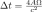
per turn (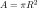
), independent of the refractive index. For a coil of turns, length
turns, length 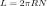
: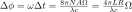
. A fibre-optic gyroscope (FOG) splits light in a 3 dB coupler into the two ends of the coil and measures the interference; a ring laser gyro instead measures the beat between two counter-propagating laser modes,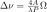
(perimeter ), and suffers lock-in at low rates (Vali and Shorthill 1976).
), and suffers lock-in at low rates (Vali and Shorthill 1976).
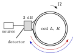
.Worked examples
- Design:
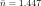
,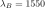
nm →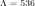
nm. With , mm:
mm: 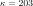
m ,
, 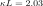
,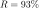
,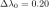
nm. - Sensitivities at 1550 nm:
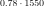
nm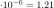
pm/µε; nm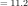
pm/K. A 0.6 nm shift at constant temperature means 496 µε (0.05% strain). - FOG: 1 km coil,
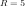
cm, 1550 nm, Earth rotation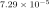
rad/s: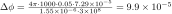
rad. Navigation-grade FOGs resolve ≈ 0.01°/h, i.e. sub-µrad phases: hence long coils, low-coherence sources (suppress backscatter interference) and phase modulation readout.
Engineering applications
Structural health monitoring with FBG arrays, temperature in power transformers and oil wells, medical pressure catheters (FP tips), inertial navigation in aircraft, ships and satellites (FOG, RLG), FBG filters and dispersion compensators in telecom, fibre-laser mirrors.
Exam-style exercise
An FBG at 1550 nm is bonded to a steel beam. The reflected peak moves from 1550.000 to 1550.950 nm while the temperature rises by 20 K. A second, free grating measures only temperature. (a) Shift due to temperature. (b) Strain. (c) Stress in the steel (
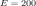
GPa).Solution
(a)
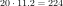
pm. (b) Mechanical shift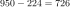
pm →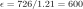
µε. (c)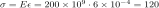
MPa.Pitfall
The Sagnac phase does not depend on the fibre index (it is a relativistic time difference), but the FBG shift does: uses the effective index of the core mode.